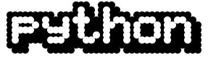

To have a better understanding of Python, we need to look at its history to see how it all began back in the 1990s. Python was created by Guido van Rossum in the late 1980s. He was the member of the National Research Institute of Mathematics and Computer Science. Initially, it was designed as a response to the ABC programming language that was also foregrounded in the Netherlands. Among the main features of Python compared to the ABC language was that Python had exception handling and was targeted for the Amoeba operating system (go Python!). A fun fact about python would be is that Python is actually not named after the snake. It is named after the British TV show Montry Python.
Of course, Python, like other languages, has gone through a number of versions. Python 0.9.0 was first released in 1991. In addition to exception handling, Python included classes, lists, and strings. More importantly, it included lambda, map, filter and reduce (JavaScript anyone?), which aligned it heavily in relation to functional programming. In 2000, Python 2.0 was released. This version of was more of an open-source project from members of the National Research Institute of Mathematics and Computer Science. This version of Python included list comprehensions, a full garbage collector, and it supported Unicode. Python 3.0 was the next version and was released in December of 2008 (the latest version of Python is 3.6.4). Although Python 2 and 3 are similar there are subtle differences. Perhaps most noticeably is the way the print statement works, as in Python 3.0 the print statement has been replaced with a print () function.
“History of Python.” Wikipedia, Wikimedia Foundation, 8 Oct. 2018, en.wikipedia.org/wiki/History_of_Python.